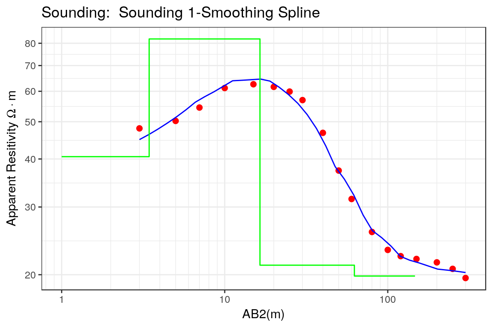
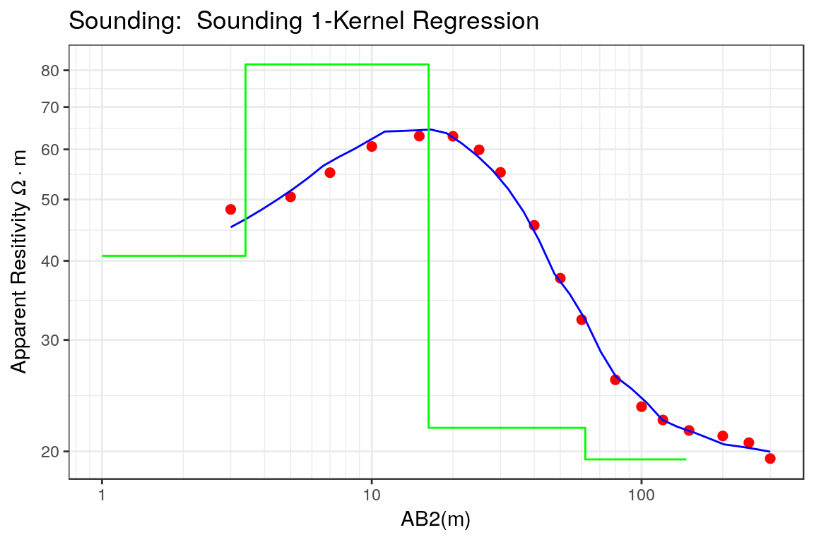
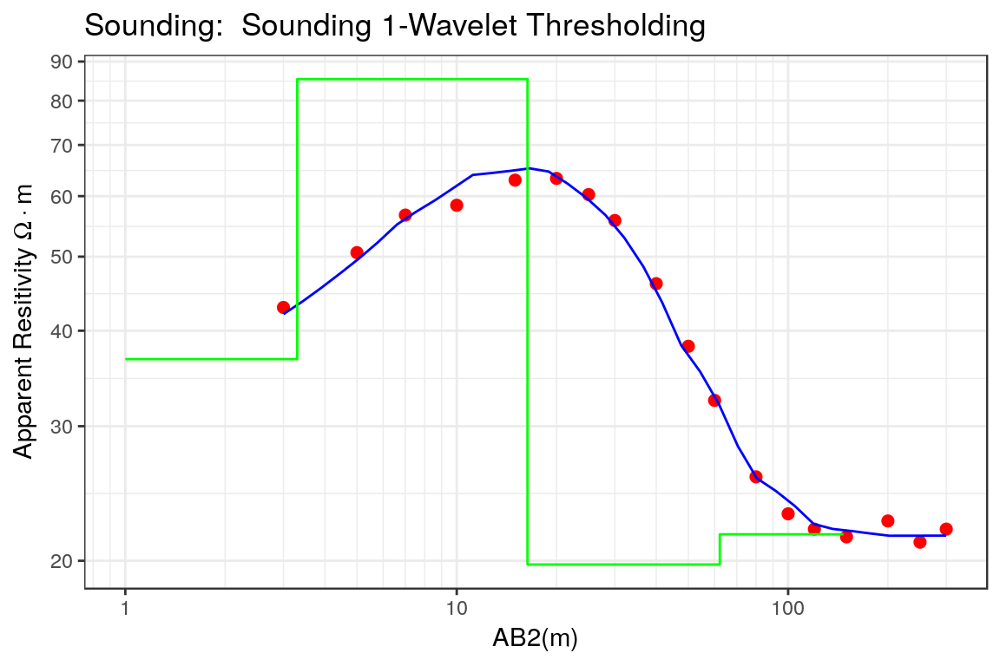

VES Smoothing using the rves package
Oscar Garcia-Cabrejo
2018-01-29
Introduction
Importance of VES for subsurface investigations. Specially for groundwater.
VES measurements of apparent resistivity and node spacing. Values of apparent resistivity sometimes include noise which is an obstacle for a proper parameter estimation.
Noise in VES can be reduced using smoothing techniques. Definition of smoothing. Techniques for smoothing.
Basic Concepts
Smoothing via splines
Let \(\{x_{i},\rho_{\text{app},i}:i=1,\ldots.n\}\) be a set of measurements of electrode spacing \(x\) and apparent resistivity \(\rho_{\text{app}}\) in what is called a VES (Vertical Electrical Sounding). It is assumed that the measurements of apparent resistivity are described by a model \(\rho_{\text{app},i}=\hat{\rho}_{\text{app},i} + \epsilon_{i}\) where \(\epsilon_{i}\) are a set of independent random variables with zero mean and constant variance, and \(\hat{\rho}_{\text{app},i}\) is a cubic smoothing spline that approximates the measurements \(\rho_{\text{app},i}\). This cubic spline is a third order polynomial defined as: \[ \hat{\rho}_{\text{app},i}(x) = a_{i}(x-x_{i})^{3}+b_{i}(x-x_{i})^{2} + c_{i}(x-x_{i}) + d_{i} \] where \(a_{i},b_{i},c_{i}\) and \(d_{i}\) are fixed coefficients that can be estimated from the measured data. The coefficients of the function \(\hat{\rho}_{\text{app},i}\) can be estimated as the minimum of: \[ \sum\limits_{i=1}^{n}[\rho_{\text{app},i}-\hat{\rho}_{\text{app},i}]^{2} + \lambda \int \hat{\rho}_{\text{app}}^{''}(x)^{2}dx \] where \(\lambda\) is the smoothing parameter, and the function \(\hat{\rho}_{\text{app},i}\) is assumed as continuous with at least second order derivative. The previous equation aims at defining a function that approximates the measured values (first term) while minimizing the roughness of the estimated function (second term). This tradeoff is controlled by the \(\lambda\) parameter that is called the smoothing parameter. If \(\lambda \rightarrow 0\) then there is no smoothing and the spline interpolation is obtained. If \(\lambda \rightarrow \infty\) then all the weight is given to the roughness penalty and a least-squares estimate is obtained.
Smoothing via Kernel Regression
Another approach to smooth the VES data is to use local polynomial regressions. In this approach, the function that approximates the apparent resistivity measurements is a polynomial of order \(p\) defined as: \[ \hat{\rho}_{\text{app},i}(x) = a_{0} + a_{1}(x-x_{i})+\frac{a_{2}}{2!}(x-x_{i})^{2} + \ldots + \frac{a_{p}}{p!}(x-x_{i})^{p} \] where the \((a_{i},i=0,\ldots,p)\) are fixed coefficients that are estimated by minimizing: \[ \sum_{i=1}^{n}w_{i}(x)[\rho_{\text{app}}(x_{i})-\hat{\rho}_{\text{app},i}(x)]^{2} \]
The coefficientes \(a_{i}\) can be estimated using weighted linear least-squares: \[ \boldsymbol{a}=(\boldsymbol{X}_{X}^{T} \boldsymbol{W}_{X} \boldsymbol{X}_{X})^{-1} \boldsymbol{X}_{X}^{T}\boldsymbol{W}_{X}\boldsymbol{Y} \] where the matrix \(\boldsymbol{X}_{X}\) is defined as: \[ \boldsymbol{X}_{X}=\left[ \begin{array}{cccc} 1& (x-x_{1})& \cdots& \frac{(x-x_{1})^{p}}{p!}\\ 1& (x-x_{2})& \cdots& \frac{(x-x_{2})^{p}}{p!}\\ \vdots& \vdots& \cdots& \vdots\\ 1& (x-x_{n})& \cdots& \frac{(x-x_{n})^{p}}{p!}\\ \end{array} \right] \] and the weight matrix is given by: \[ \boldsymbol{W}_{X}=\left[ \begin{array}{cccc} w(x_{1})& 0& \cdots & 0 \\ 0& w(x_{2})& \cdots & 0 \\ \vdots& \vdots& \vdots& \vdots \\ 0& 0& \cdots & w(x_{n}) \end{array} \right] \]
Example
VES 1
The first step in the interpretation of a VES is to load the rves package:
library(rves)For this example, the VES ves_data1 included in the package is used to test the different functions included in rves:
data("ves_data1")The electrode spacing and the apparent resistivity values are defined:
ab2 <- ves_data1$ab2
apprho <- ves_data1$apprhoand these are used to define the VES object inside R:
sev1a <- ves(id= "Sounding 1", ab2 = ab2, apprho = apprho)The plot of the VES used as example can be seen in the following plot:
p1 <- plot(sev1a, type = "ves")Smoothing via splines
res.ss <- smoothing_ves(sev1a, method = "smooth.spline")ab2.def <- rep(res.ss$ab2, 2)
apprho.def <- vector('numeric', length = 36)
apprho.def[1:18] <- res.ss$apprho
print(length(sev1a$appres))
#> [1] 18
apprho.def[19:36] <- sev1a$appres
meas.type <- vector('character', length = 36)
meas.type[1:18] <- rep("smooth.spline", 18)
meas.type[19:36] <- rep("raw", 18)
res.ss.df <- data.frame(ab2 = ab2.def, apprho = apprho.def,
type = as.factor(meas.type))p.ss <- ggplot() + geom_point(aes(x = ab2, y = apprho, color = type),
data = res.ss.df) +
scale_x_log10() +
scale_y_log10() +
ggtitle('Comparison') +
theme_bw()
print(p.ss) 
sev1ss <- ves(id = "Sounding 1-Smoothing Spline", ab2 = res.ss$ab2,
apprho = res.ss$apprho)rho <- c(40,70,30, 20)
thick <- c(2,10,50,500)
par0 <- c(rho, thick)res.ss.nls <- calibrate_nls(sev1ss, par0, iterations = 10, ireport = 5)
#> iteration, RSS, Rel Error = 0 0.002201384 2.654601
#> iteration, RSS, Rel Error = 5 0.0003970715 1.093091
#> iteration, RSS, Rel Error = 9 0.0002212703 0.8111669sev1ss$rhopar <- res.ss.nls$rho
sev1ss$thickpar <- res.ss.nls$thickness
sev1ss$interpreted <- TRUEp3 <- plot(sev1ss, type = "ves")
print(p3)
Kernel Regression
res.kr <- smoothing_ves(sev1a, method = "kernel.regression", bw = 0.5)ab2.def <- rep(res.kr$ab2, 2)
apprho.def <- vector('numeric', length = 36)
apprho.def[1:18] <- res.kr$apprho
apprho.def[19:36] <- sev1a$appres
meas.type <- vector('character', length = 36)
meas.type[1:18] <- rep("kernel.regression", 18)
meas.type[19:36] <- rep("raw", 18)
res.kr.df <- data.frame(ab2 = ab2.def, apprho = apprho.def,
type = as.factor(meas.type))p.kr <- ggplot() + geom_point(aes(x = ab2, y = apprho, color = type),
data = res.kr.df) +
scale_x_log10() +
scale_y_log10() +
ggtitle('Comparison') +
theme_bw()
print(p.kr) 
sev1kr <- ves(id = "Sounding 1-Kernel Regression", ab2 = res.kr$ab2,
apprho = res.kr$apprho)res.kr.nls <- calibrate_nls(sev1kr, par0, iterations = 10, ireport = 5)
#> iteration, RSS, Rel Error = 0 0.002041967 2.584166
#> iteration, RSS, Rel Error = 5 0.0002895334 0.9670573
#> iteration, RSS, Rel Error = 9 0.0001384567 0.6277856sev1kr$rhopar <- res.kr.nls$rho
sev1kr$thickpar <- res.kr.nls$thickness
sev1kr$interpreted <- TRUEp4 <- plot(sev1kr, type = "ves")
print(p4)
Wavelet Smoothing
res.wv <- smoothing_ves(sev1a, method = "wavelet")ab2.def <- rep(res.wv$ab2, 2)
apprho.def <- vector('numeric', length = 36)
apprho.def[1:18] <- res.wv$apprho
apprho.def[19:36] <- sev1a$appres
meas.type <- vector('character', length = 36)
meas.type[1:18] <- rep("wavelet.thresholding", 18)
meas.type[19:36] <- rep("raw", 18)
res.wv.df <- data.frame(ab2 = ab2.def, apprho = apprho.def,
type = as.factor(meas.type))p.wv <- ggplot() + geom_point(aes(x = ab2, y = apprho, color = type),
data = res.wv.df) +
scale_x_log10() +
scale_y_log10() +
ggtitle('Comparison') +
theme_bw()
print(p.wv) 
sev1wv <- ves(id = "Sounding 1-Wavelet Thresholding", ab2 = res.wv$ab2,
apprho = res.wv$apprho)res.wv.nls <- calibrate_nls(sev1wv, par0, iterations = 10, ireport = 5)
#> iteration, RSS, Rel Error = 0 0.002179202 2.449921
#> iteration, RSS, Rel Error = 5 0.0002837838 0.9449526
#> iteration, RSS, Rel Error = 9 0.0001236067 0.6023878sev1wv$rhopar <- res.wv.nls$rho
sev1wv$thickpar <- res.wv.nls$thickness
sev1wv$interpreted <- TRUEp5 <- plot(sev1wv, type = "ves")
print(p5)